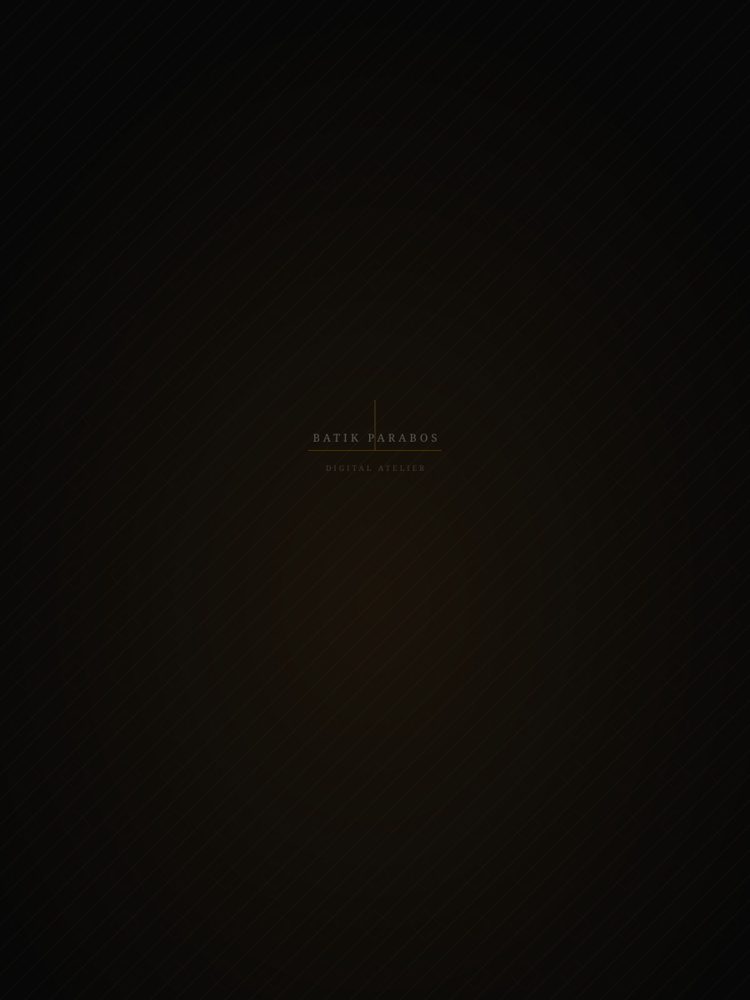

Cloth Preparation
Cotton Primissima is washed, boiled, and sun-dried to remove starch and impurities. Only cloth that passes our hand-feel test proceeds.

A contemporary expression of Indonesian heritage and craftsmanship — designed for those who wear their identity with intention.
The Parabos Philosophy
Batik is not merely a pattern. It is a language — one spoken by the artisan's hand in wax and dye, across metres of cloth, over hours that become days. At Parabos, we honour that language while giving it a new vocabulary for the modern wardrobe.
Discover Our HeritageBatik Parabos was born in Surakarta — a city whose royal court traditions gave the world some of its most enduring textile art. Each motif in our collection carries a history: Sogan earth tones from the Solo court, Parang diagonals of the Mataram kingdom, Kawung circles of purity.
We do not replicate tradition. We converse with it — bringing the same devotion to craft into contemporary garments that belong in the present.
5
Craftsmanship Stages
40+
Years of Tradition
Every Batik Parabos piece moves through five distinct stages of craft before it arrives with you. Each stage requires skill, patience, and care that cannot be automated.
Cotton Primissima is washed, boiled, and sun-dried to remove starch and impurities. Only cloth that passes our hand-feel test proceeds.
Traditional motifs are transferred by hand onto the cloth surface using pencil guides. Each line is intentional; no digital projection is used.
Hot wax is applied with a stamp (cap) or a hand tool (canting). The wax forms a resist barrier, defining which areas will remain undyed in the final garment.
We dye in sequence — light tones first, building depth through successive dye baths. Each dip is timed by experience, not a clock.
Wax is removed by boiling. The cloth is pressed, inspected, and cut to our patterns by our in-house tailors. Each garment is signed before it leaves the atelier.
Private Atelier
Beyond the digital experience, Batik Parabos maintains a private physical atelier in Surakarta. By appointment, you may visit to view the full collection, commission a bespoke piece, or simply experience the craft firsthand.
Private Viewing
Collection viewing by appointment.
Craft Experience
Guided batik-making session.
Bespoke Consultation
Custom garment from scratch.
Fitting & Alterations
In-house tailoring consultation.
Each piece in our collection was made to be worn, not merely admired. Explore the full atelier and find the piece that speaks to you.